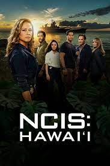

Tým 1
Tuto skupinu tvořili 3 kriminalisti a 8 policistů, z něhož 3 byli psovodi. S druhým týmem se rozhodli, že se rozmístí směrem
na východ. Po určité době chůze psi něco zavětřili a začali se trhat svým pánům z vodítka, takže jim utekli hluboko do lesa.
Všichni se je snažili doběhnout a ohlíželi se všude kolem sebe, jestli neuvidí něco podezřelého. Po 10 minutách klusu uslyšeli psí
štěkot a nahned spatřili své psy, stojící u staré chalupy. Vydali se za nimi a šli obhléhnout chalupu a její okolí. Nejvíce je překvapilo, že po pár
minutách zkoumání okolí domů, se u nich objevili členové z druhého týmu a tak se domluvili společně co dál. Bez váhání vyrazili
dveře z pantů. Jedna polovina šla tedy hlavním vchodem a ta druhá šla vchodem, který byl v zemi z druhé strany chaty,přivřený
dřevěným poklopem.

Hlavní vchod
Zadní poklop
tým 2